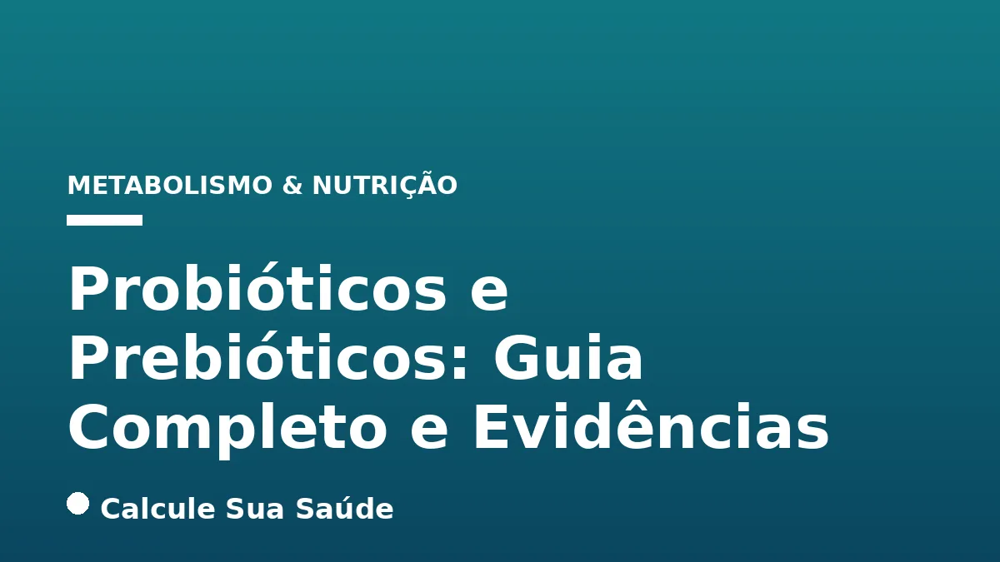

Aviso médico importante
Este conteúdo é educativo e informativo e não substitui a consulta, o diagnóstico ou o tratamento de um profissional de saúde. Em caso de sintomas, procure orientação médica.
Índice do Artigo
- 1. A Microbiota Intestinal: Um Ecossistema Vital para a Saúde
- 2. Probióticos: Microrganismos Vivos com Benefícios Comprovados
- 3. Prebióticos: O Alimento Seletivo para a Microbiota Benéfica
- 4. Simbióticos: A Combinação Estratégica de Probióticos e Prebióticos
- 5. Disbiose Intestinal: Causas, Fatores de Risco e Sintomas
- 6. Diagnóstico da Disbiose: Abordagem Clínica e Laboratorial
- 7. Probióticos na Prática Clínica: Evidências e Aplicações Específicas
- 8. O Papel dos Prebióticos na Promoção da Saúde Intestinal
- 9. Fontes Alimentares de Probióticos e Prebióticos
- 10. Desvendando Mitos: O Que a Ciência Realmente Diz sobre Probióticos e Prebióticos
- 11. Regulamentação e Nível de Evidência no Brasil e Globalmente
- 12. Considerações Práticas para o Uso de Probióticos e Prebióticos
- 13. O Cenário Brasileiro e Global: Crescimento do Mercado de Probióticos
- 14. Tabela Comparativa: Probióticos vs. Prebióticos
- 15. Tabela: Condições com Evidência de Benefício para Probióticos Específicos
- 16. Conclusão: O Futuro da Saúde Intestinal e a Abordagem Integrativa
- 17. Perguntas frequentes
A saúde intestinal tem emergido como um pilar central para o bem-estar geral do organismo. No intrincado ecossistema do nosso trato digestivo, reside a microbiota intestinal, uma comunidade vasta e diversificada de microrganismos – incluindo bactérias, fungos, vírus, arqueias e protozoários – que desempenha funções vitais. Quando esse delicado equilíbrio é perturbado, resultando na condição conhecida como disbiose intestinal, uma série de problemas de saúde podem surgir, afetando desde a digestão e a absorção de nutrientes até a modulação do sistema imunológico e até mesmo o humor.
Nesse cenário complexo, probióticos e prebióticos ganham destaque como ferramentas valiosas para a modulação e o restabelecimento da harmonia da microbiota. Embora frequentemente mencionados em conjunto, esses componentes possuem naturezas e mecanismos de ação distintos, mas complementares. Compreender suas diferenças, as evidências científicas que respaldam seus benefícios e as melhores práticas para seu uso é fundamental para quem busca otimizar a saúde intestinal de forma consciente e baseada em dados.
Este artigo aprofundará nas definições, nos mecanismos de ação, nas evidências clínicas e nas aplicações práticas de probióticos e prebióticos, desmistificando conceitos e fornecendo informações embasadas para profissionais de saúde e para o público em geral. Abordaremos desde a regulamentação até os mitos comuns, sempre com o rigor científico que caracteriza o portal Calcule Sua Saúde.
Em resumo
- Probióticos são microrganismos vivos que, em doses adequadas, conferem benefícios à saúde do hospedeiro, como Lactobacillus e Bifidobacterium.
- Prebióticos são substratos não digeríveis que estimulam seletivamente o crescimento e a atividade de bactérias benéficas no intestino, como inulina e FOS.
- A eficácia dos probióticos é específica para cada linhagem (gênero, espécie e designação alfanumérica), não sendo todos iguais ou intercambiáveis.
- Probióticos e prebióticos são indicados para diversas condições, incluindo diarreia (aguda e associada a antibióticos), síndrome do intestino irritável e modulação imunológica.
- A disbiose intestinal, um desequilíbrio da microbiota, pode ser causada por dieta inadequada, uso de antibióticos e estresse, manifestando-se com sintomas digestivos e sistêmicos.
- Embora geralmente seguros, o uso de probióticos deve ser cauteloso em grupos vulneráveis (crianças, idosos, imunocomprometidos) e sempre sob orientação profissional.
1. A Microbiota Intestinal: Um Ecossistema Vital para a Saúde
A microbiota intestinal, antes conhecida como flora intestinal, é um vasto e dinâmico conjunto de trilhões de microrganismos que habitam o trato gastrointestinal humano. Essa comunidade complexa, composta principalmente por bactérias, mas também por fungos, vírus, arqueias e protozoários, estabelece uma relação simbiótica com o hospedeiro, desempenhando funções cruciais que vão muito além da simples digestão. A diversidade e o equilíbrio dessa microbiota são fundamentais para a manutenção da saúde, influenciando processos metabólicos, imunológicos e até neurocomportamentais.
Entre as funções mais importantes da microbiota, destacam-se a digestão de carboidratos complexos que o corpo humano não consegue digerir, a síntese de vitaminas essenciais (como K e algumas do complexo B), a proteção contra patógenos invasores, a modulação do sistema imunológico e a produção de metabólitos benéficos, como os ácidos graxos de cadeia curta (AGCCs). Um desequilíbrio nessa comunidade, conhecido como disbiose intestinal, pode comprometer essas funções e contribuir para o desenvolvimento de diversas condições de saúde.
2. Probióticos: Microrganismos Vivos com Benefícios Comprovados
A definição de probióticos tem evoluído, mas o conceito central permanece: são microrganismos vivos que, quando administrados em quantidades adequadas, conferem um benefício à saúde do hospedeiro. Essa definição, endossada pela Organização Mundial da Saúde (OMS), ressalta a importância da viabilidade e da dosagem para que o efeito benéfico seja alcançado. Os probióticos mais comuns são bactérias dos gêneros Lactobacillus e Bifidobacterium, mas também incluem leveduras como Saccharomyces boulardii.
Para que um microrganismo seja classificado como probiótico, ele deve atender a critérios rigorosos. Primeiramente, precisa ser identificado em nível de gênero, espécie e linhagem (designação alfanumérica), pois os benefícios são linhagem-específicos. Em segundo lugar, deve ser capaz de sobreviver à passagem pelo trato gastrointestinal, resistindo à acidez estomacal e aos sais biliares, para chegar vivo e ativo ao intestino. Por fim, seus efeitos benéficos devem ser comprovados por estudos científicos robustos. A Agência Nacional de Vigilância Sanitária (ANVISA) no Brasil alinha-se a esses princípios, exigindo a comprovação da identidade, segurança e efeito benéfico para a regulamentação de produtos probióticos.
A quantidade mínima viável de probióticos é um fator crítico. A ANVISA sugere uma faixa de 108 a 109 Unidades Formadoras de Colônias (UFC) na recomendação diária do produto pronto para consumo, embora doses menores possam ser aceitas se a eficácia for cientificamente demonstrada para aquela linhagem específica e condição de saúde.
3. Prebióticos: O Alimento Seletivo para a Microbiota Benéfica
Diferentemente dos probióticos, que são microrganismos vivos, os prebióticos são componentes alimentares não digeríveis que servem como substrato para as bactérias benéficas já presentes no cólon. A definição moderna, publicada em 2017 pela International Scientific Association for Probiotics and Prebiotics (ISAPP), amplia o conceito: "Prebiótico é um substrato seletivamente utilizado por microrganismos hospedeiros que confere um benefício à saúde".
Essa definição é crucial porque esclarece que nem toda fibra alimentar é um prebiótico, e nem todo prebiótico é necessariamente uma fibra. Para ser considerado prebiótico, o substrato deve ser seletivamente fermentado por microrganismos intestinais que conferem benefícios à saúde, como Lactobacillus e Bifidobacterium. Exemplos clássicos de prebióticos incluem a inulina, os frutooligossacarídeos (FOS) e os galactooligossacarídeos (GOS), encontrados em diversos alimentos vegetais. Esses compostos chegam intactos ao intestino grosso, onde são fermentados, promovendo o crescimento e a atividade das bactérias desejáveis.
Para aprofundar no tema das fibras, confira nosso artigo sobre Fibras Alimentares: Tipos, Quantidade e Impacto na Saúde.
4. Simbióticos: A Combinação Estratégica de Probióticos e Prebióticos
A combinação de probióticos e prebióticos em um único produto é conhecida como simbiótico. Essa abordagem visa potencializar os benefícios à saúde intestinal, uma vez que o prebiótico pode atuar como alimento para o probiótico administrado, aumentando sua sobrevivência e atividade, além de nutrir a microbiota benéfica residente. Os simbióticos podem ser classificados em dois tipos principais:
- Simbióticos Complementares: Nesses produtos, tanto o componente probiótico quanto o prebiótico cumprem individualmente seus próprios critérios de definição e são administrados em doses que comprovadamente trazem benefícios à saúde. Ou seja, cada componente é eficaz por si só.
- Simbióticos Sinérgicos: Aqui, um microrganismo vivo selecionado utiliza um substrato administrado em conjunto, e a combinação de ambos proporciona benefícios documentados. Nesses casos, os componentes individuais não precisam necessariamente cumprir, isoladamente, os critérios de probiótico ou prebiótico, mas a interação entre eles é o que gera o efeito benéfico.
A formulação de simbióticos requer um cuidadoso planejamento científico para garantir a compatibilidade e a eficácia dos componentes combinados, visando maximizar o impacto positivo na saúde do hospedeiro.
5. Disbiose Intestinal: Causas, Fatores de Risco e Sintomas
A disbiose intestinal, caracterizada pelo desequilíbrio na composição e função da microbiota, é um fenômeno cada vez mais reconhecido como um fator contribuinte para diversas condições de saúde. Suas causas são multifatoriais e frequentemente interligadas:
- Dieta Inadequada: Um dos principais fatores. Dietas ricas em alimentos ultraprocessados, açúcares refinados e gorduras saturadas, e pobres em fibras (presentes em frutas, vegetais e grãos integrais), podem alterar negativamente a microbiota. Para entender os riscos de uma dieta com excesso de industrializados, veja nosso artigo sobre Alimentos Ultraprocessados: Riscos e Identificação.
- Uso de Medicamentos: Antibióticos, por exemplo, são projetados para eliminar bactérias patogênicas, mas frequentemente afetam também as bactérias benéficas, levando à disbiose. O uso prolongado de laxantes e cortisona também pode impactar o equilíbrio.
- Estresse Crônico: O eixo intestino-cérebro é bidirecional, e o estresse pode alterar a motilidade intestinal, a permeabilidade da barreira e a composição da microbiota.
- Álcool e Tabagismo: O consumo excessivo de álcool pode prejudicar a integridade da barreira intestinal e alterar a microbiota. Para mais informações sobre os danos do álcool, consulte Álcool e Fígado: Da Esteatose à Cirrose.
- Baixa Imunidade e Doenças Intestinais: Condições como doenças inflamatórias intestinais (DII) e diverticulose estão frequentemente associadas à disbiose.
Os sintomas da disbiose são variados e podem ser tanto digestivos quanto sistêmicos, incluindo náuseas, diarreia, constipação, distensão abdominal, flatulência, eructação (arroto), refluxo, cansaço constante, dor de cabeça, ansiedade e depressão. A disbiose também pode comprometer a absorção de nutrientes, levando a deficiências vitamínicas. Em casos de deficiência de ferro, por exemplo, a disbiose pode agravar a condição, tornando relevante a leitura sobre Anemia Ferropriva: Sinais e Diagnóstico.
6. Diagnóstico da Disbiose: Abordagem Clínica e Laboratorial
O diagnóstico da disbiose intestinal não se baseia em um único exame, mas sim em uma avaliação clínica abrangente, que considera o histórico detalhado do paciente, seus hábitos alimentares, uso de medicamentos e estilo de vida. Profissionais de saúde como gastroenterologistas, clínicos gerais e coloproctologistas são os mais indicados para conduzir essa investigação.
Além da anamnese, exames complementares podem ser solicitados para auxiliar na identificação do desequilíbrio. Exames de fezes podem fornecer informações sobre a composição da microbiota, a presença de patógenos, marcadores inflamatórios e a digestão de nutrientes. Um exame específico para disbiose, conhecido como exame Indican, avalia a quantidade de Indican (ou indol) na urina. O Indican é um produto do metabolismo do triptofano pelas bactérias intestinais; níveis elevados podem indicar um aumento da putrefação proteica no intestino, sugerindo disbiose. É importante ressaltar que a interpretação desses exames deve ser feita por um profissional qualificado, considerando o quadro clínico completo do paciente.
7. Probióticos na Prática Clínica: Evidências e Aplicações Específicas
A pesquisa científica sobre probióticos tem avançado significativamente, revelando seu potencial terapêutico em diversas condições. No entanto, é crucial reiterar que a eficácia é específica para cada linhagem. A Organização Mundial de Gastroenterologia (WGO) e a Associação Científica Internacional para Probióticos e Prebióticos (ISAPP) fornecem diretrizes baseadas em evidências para o uso de probióticos.
Diarreia Aguda e Associada a Antibióticos
Os probióticos são amplamente indicados para o tratamento da diarreia aguda e, principalmente, na prevenção da diarreia associada ao uso de antibióticos. O Saccharomyces boulardii CNCM I-745 é uma das linhagens mais estudadas e com forte evidência para essas condições, ajudando a restaurar o equilíbrio da microbiota perturbada pelos antibióticos e a reduzir a duração e a gravidade dos episódios diarreicos.
Saúde Digestiva Geral e Síndrome do Intestino Irritável
Probióticos contribuem para o reequilíbrio da microbiota, melhorando a saúde intestinal e favorecendo a regulação do trânsito intestinal e a absorção de vitaminas. Podem aliviar sintomas digestivos como distensão abdominal, flatulência e dor, especialmente em pacientes com Síndrome do Intestino Irritável (SII). Linhagens específicas de Bifidobacterium e Lactobacillus têm demonstrado resultados promissores na melhora dos sintomas da SII.
Modulação Imunológica
A interação entre a microbiota intestinal e o sistema imunológico é profunda. Probióticos estimulam o sistema imunológico, auxiliando na proteção contra agentes nocivos e podendo diminuir a incidência e a gravidade de algumas infecções comuns, como as do trato respiratório e urinário. Há evidências emergentes de que probióticos podem ser tomados por pessoas saudáveis para prevenir certas doenças e modular a imunidade de forma benéfica.
Alergias e Eczema Atópico
Algumas linhagens probióticas têm sido estudadas por seu potencial em modular a resposta imune associada a alergias, podendo ajudar a diminuir reações alérgicas e a gravidade do eczema atópico, especialmente em crianças.
Outras Condições
Probióticos também podem ser úteis no controle dos sintomas associados à má digestão da lactose e na redução dos sintomas de cólica em bebês. Pesquisas continuam a explorar a conexão entre microrganismos intestinais e condições complexas como diabetes, obesidade, depressão e doenças inflamatórias intestinais, embora mais estudos sejam necessários para estabelecer recomendações clínicas firmes para muitas dessas condições.
8. O Papel dos Prebióticos na Promoção da Saúde Intestinal
Os prebióticos, ao servirem como alimento seletivo para as bactérias benéficas, exercem uma série de efeitos fisiológicos positivos que contribuem para a saúde intestinal e sistêmica. Seus benefícios são indiretos, mediando a atividade da microbiota.
Melhora do Trânsito Intestinal
Ao serem fermentados pelas bactérias intestinais, os prebióticos aumentam a massa fecal e a frequência evacuatória, contribuindo para a melhoria do trânsito intestinal e aliviando a constipação. Esse efeito é similar ao de algumas fibras alimentares, mas com a especificidade de nutrir seletivamente as bactérias benéficas.
Produção de Ácidos Graxos de Cadeia Curta (AGCCs)
A fermentação de prebióticos resulta na produção de ácidos graxos de cadeia curta (AGCCs), como butirato, propionato e acetato. O butirato, em particular, é uma fonte de energia primária para as células do cólon (colonócitos) e desempenha um papel crucial na manutenção da integridade da barreira intestinal, na redução da inflamação e na modulação da imunidade local e sistêmica.
Inibição de Microrganismos Patogênicos
A fermentação de prebióticos por bactérias benéficas leva à produção de AGCCs e à diminuição do pH intestinal. Um ambiente mais ácido é desfavorável ao crescimento de muitos microrganismos patogênicos, ajudando a inibir sua proliferação e a proteger o intestino contra infecções.
Apoio Imunológico Indireto
Ao promover o crescimento de bactérias benéficas e a produção de AGCCs, os prebióticos contribuem indiretamente para a melhoria da função imunológica. Uma microbiota equilibrada e a presença de AGCCs são fatores importantes para a maturação e o funcionamento adequado das células imunes no intestino, que representam uma parte significativa do sistema imunológico do corpo.
Aumento da Absorção de Minerais
Alguns prebióticos, como os FOS e GOS, têm sido associados a uma maior absorção de minerais essenciais, como cálcio e magnésio, no intestino grosso. Isso ocorre devido à formação de complexos solúveis com esses minerais e à redução do pH intestinal, que pode aumentar sua solubilidade e biodisponibilidade.
9. Fontes Alimentares de Probióticos e Prebióticos
Incorporar probióticos e prebióticos na dieta é uma estratégia eficaz para promover a saúde intestinal. Ambos podem ser encontrados em alimentos, além de estarem disponíveis como suplementos.
Alimentos Ricos em Probióticos
Os probióticos são naturalmente presentes em alimentos fermentados. É importante notar que nem todo alimento fermentado contém probióticos vivos em quantidade suficiente para conferir um benefício à saúde, mas muitos são excelentes fontes:
- Iogurte e Kefir: Produtos lácteos fermentados que contêm culturas vivas de Lactobacillus e Bifidobacterium.
- Chucrute: Repolho fermentado, rico em bactérias lácticas.
- Kimchi: Prato coreano de vegetais fermentados, geralmente repolho e rabanete.
- Miso: Pasta de soja fermentada, comum na culinária japonesa.
- Tempeh: Produto de soja fermentada, com textura firme.
- Kombucha: Bebida fermentada à base de chá.
- Picles: Pepinos fermentados em salmoura (não os picles feitos com vinagre, que não contêm culturas vivas).
Alimentos Ricos em Prebióticos
Os prebióticos são encontrados em uma variedade de alimentos vegetais, especialmente aqueles ricos em fibras específicas:
- Raiz de Chicória: Uma das fontes mais ricas em inulina.
- Alho e Cebola: Contêm FOS e outros prebióticos.
- Aspargos: Boa fonte de inulina.
- Banana (verde): Rica em amido resistente, que atua como prebiótico.
- Cevada e Aveia: Contêm beta-glucanas e outros carboidratos complexos.
- Maçã: Rica em pectina, uma fibra que pode ter efeitos prebióticos.
- Leguminosas (feijão, lentilha, grão de bico): Fontes de GOS e outras fibras fermentáveis.
- Alcachofra: Contém inulina.
Uma dieta variada e rica em alimentos integrais, frutas, vegetais e leguminosas é a melhor forma de garantir um aporte adequado de prebióticos e, consequentemente, nutrir uma microbiota intestinal saudável.
10. Desvendando Mitos: O Que a Ciência Realmente Diz sobre Probióticos e Prebióticos
A popularidade de probióticos e prebióticos gerou muitos mitos e equívocos. É fundamental basear-se na ciência para tomar decisões informadas sobre seu uso.
Mito: Todos os probióticos são iguais e servem para tudo.
Ciência: Não. Esta é uma das maiores falácias. A eficácia dos probióticos é altamente específica para cada linhagem. Isso significa que uma linhagem de Lactobacillus rhamnosus, por exemplo, pode ter propriedades e benefícios completamente diferentes de outra linhagem de Lactobacillus rhamnosus, ou de uma linhagem de Bifidobacterium lactis. É crucial que a linhagem seja bem tipificada (gênero, espécie e designação alfanumérica) e que seus benefícios, bem como as quantidades adequadas, sejam comprovados por estudos científicos rigorosos para a condição de saúde específica que se deseja tratar ou prevenir. Diferentes linhagens podem ter propriedades benéficas ou até nocivas distintas.
Mito: Mais UFCs (Unidades Formadoras de Colônias) significa que o probiótico é melhor.
Ciência: Nem sempre. Embora uma quantidade mínima de UFCs seja necessária para que o probiótico exerça seu efeito, o que realmente importa é se o produto contém a quantidade de UFCs que, segundo estudos científicos, comprovadamente oferece os benefícios de saúde pretendidos para aquela linhagem específica. Além disso, é essencial que essa dose seja garantida até a data de validade do produto. A ANVISA estabelece uma faixa mínima de 108 a 109 UFC para a recomendação diária, mas aceita valores menores se a eficácia for comprovada por evidências robustas.
Mito: Probióticos e prebióticos são a mesma coisa.
Ciência: Não. Como detalhado anteriormente, probióticos são microrganismos vivos benéficos que você ingere, enquanto prebióticos são "alimentos" (substratos não digeríveis) para esses microrganismos, estimulando o crescimento e a atividade das bactérias benéficas já presentes no seu intestino. Eles trabalham em conjunto, mas são entidades distintas.
Mito: Probióticos são sempre seguros para todos.
Ciência: Embora geralmente bem tolerados e considerados seguros para a maioria das pessoas saudáveis, probióticos não são isentos de riscos para todos os indivíduos. Crianças pequenas, idosos, gestantes e, especialmente, pacientes imunocomprometidos ou com condições de saúde graves (como pacientes em suporte nutricional hospitalar, transplantados ou com pancreatite) devem ter cautela e consultar um profissional de saúde antes de usar suplementos probióticos. Houve relatos de complicações em certos grupos vulneráveis. A Administração de Alimentos e Medicamentos dos EUA (FDA) não regula a suplementação de probióticos e prebióticos da mesma forma que medicamentos, e a pesquisa sobre sua segurança em todos os grupos ainda é limitada.
11. Regulamentação e Nível de Evidência no Brasil e Globalmente
A regulamentação de probióticos e prebióticos varia entre os países, mas a tendência global é de maior rigor científico para garantir a segurança e a eficácia dos produtos. No Brasil, a ANVISA desempenha um papel fundamental na regulamentação de probióticos em alimentos e suplementos. Para que um produto seja comercializado com alegação de probiótico, é exigida a comprovação da identidade da linhagem, sua segurança e o efeito benéfico à saúde por meio de estudos científicos.
Organizações internacionais como a Organização Mundial de Gastroenterologia (WGO) e a Associação Científica Internacional para Probióticos e Prebióticos (ISAPP) são referências importantes, fornecendo diretrizes e recomendações baseadas em evidências para o uso de probióticos em diferentes condições clínicas. Essas diretrizes enfatizam a especificidade da linhagem e a necessidade de doses adequadas, alinhando-se com o princípio de que "não existe probiótico para tudo".
Apesar dos avanços, o campo ainda enfrenta desafios, como a padronização de métodos de estudo e a necessidade de mais pesquisas sobre a segurança a longo prazo em populações específicas. A vigilância regulatória e a educação do consumidor são essenciais para garantir que os produtos disponíveis no mercado sejam de qualidade e realmente ofereçam os benefícios prometidos.
12. Considerações Práticas para o Uso de Probióticos e Prebióticos
A decisão de usar probióticos ou prebióticos, seja através da dieta ou de suplementos, deve ser individualizada e, idealmente, orientada por um profissional de saúde. Aqui estão algumas considerações práticas:
- Avaliação Profissional: Antes de iniciar qualquer suplementação, consulte um médico ou nutricionista. Eles podem ajudar a identificar a causa de sintomas digestivos, diagnosticar disbiose e recomendar as linhagens e doses mais adequadas para sua condição específica.
- Dieta Equilibrada: A base para uma microbiota saudável é uma dieta rica em alimentos integrais, frutas, vegetais e leguminosas, que fornecem naturalmente prebióticos e fibras. Alimentos fermentados também podem ser incorporados regularmente.
- Escolha do Suplemento: Se a suplementação for indicada, procure produtos que especifiquem claramente a linhagem (gênero, espécie e designação alfanumérica) e a quantidade de UFCs garantida até a data de validade. Verifique se há evidências científicas para a linhagem específica e para a condição que você deseja tratar.
- Armazenamento: Muitos probióticos são sensíveis ao calor e à umidade. Siga as instruções de armazenamento do fabricante, que podem incluir refrigeração.
- Paciência e Monitoramento: Os efeitos dos probióticos e prebióticos podem não ser imediatos. O monitoramento dos sintomas e a comunicação com o profissional de saúde são importantes para ajustar o tratamento, se necessário.
Lembre-se que suplementos não substituem uma dieta saudável e um estilo de vida equilibrado, mas podem ser ferramentas complementares valiosas quando usados corretamente.
13. O Cenário Brasileiro e Global: Crescimento do Mercado de Probióticos
O interesse e a utilização de probióticos têm crescido exponencialmente em todo o mundo, impulsionados pela crescente conscientização sobre a importância da saúde intestinal e pela pesquisa científica que valida seus benefícios. Dados epidemiológicos recentes indicam que a América Latina se destaca como uma região de alto consumo de probióticos, e o Brasil, em particular, representa aproximadamente metade desse mercado latino-americano.
Esse crescimento reflete não apenas a demanda dos consumidores por soluções para problemas digestivos e para a promoção da saúde geral, mas também o investimento da indústria em pesquisa e desenvolvimento de novos produtos. A expansão do mercado, no entanto, reforça a necessidade de educação contínua para consumidores e profissionais de saúde, garantindo que as escolhas sejam feitas com base em evidências e que os produtos utilizados sejam de alta qualidade e devidamente regulamentados.
A tendência é que o mercado continue a crescer, com o surgimento de novas linhagens, formulações e aplicações, à medida que a ciência desvenda ainda mais os complexos mecanismos de interação entre a microbiota e a saúde humana.
14. Tabela Comparativa: Probióticos vs. Prebióticos
| Característica | Probióticos | Prebióticos |
|---|---|---|
| Natureza | Microrganismos vivos (bactérias, leveduras) | Componentes alimentares não digeríveis (fibras, oligossacarídeos) |
| Mecanismo de Ação | Colonizam temporariamente o intestino, modulam a microbiota, produzem metabólitos benéficos, interagem com o sistema imune. | Serve como alimento seletivo para microrganismos benéficos já presentes no intestino, estimulando seu crescimento e atividade. |
| Exemplos | Lactobacillus spp., Bifidobacterium spp., Saccharomyces boulardii | Inulina, FOS (frutooligossacarídeos), GOS (galactooligossacarídeos), amido resistente |
| Fontes Alimentares | Iogurte, kefir, chucrute, kimchi, tempeh, miso | Alho, cebola, aspargos, banana verde, alcachofra, aveia, leguminosas |
| Benefícios Primários | Reequilíbrio da microbiota, melhora da digestão, suporte imunológico, tratamento de diarreias. | Aumento de bactérias benéficas, produção de AGCCs, melhora do trânsito intestinal, absorção de minerais. |
| Especificidade | Linhagem-específico (benefícios variam por gênero, espécie e linhagem) | Substrato-específico (efeitos dependem do tipo de prebiótico e da microbiota do indivíduo) |
15. Tabela: Condições com Evidência de Benefício para Probióticos Específicos
| Condição de Saúde | Exemplos de Linhagens Probióticas com Evidência | Benefício Principal |
|---|---|---|
| Diarreia Associada a Antibióticos | Saccharomyces boulardii CNCM I-745, Lactobacillus rhamnosus GG | Prevenção e redução da duração da diarreia |
| Diarreia Aguda Infecciosa | Saccharomyces boulardii CNCM I-745, Lactobacillus rhamnosus GG | Redução da duração e gravidade da diarreia |
| Síndrome do Intestino Irritável (SII) | Bifidobacterium bifidum MIMBb75, Lactobacillus plantarum 299v, Bifidobacterium lactis DN-173 010 | Melhora de sintomas como dor abdominal, inchaço e flatulência |
| Cólica Infantil | Lactobacillus reuteri DSM 17938 | Redução do tempo de choro em bebês amamentados |
| Eczema Atópico (Prevenção) | Lactobacillus rhamnosus GG, Lactobacillus reuteri | Pode reduzir o risco de desenvolvimento em crianças de alto risco |
| Intolerância à Lactose | Lactobacillus acidophilus, Lactobacillus bulgaricus, Streptococcus thermophilus (em produtos lácteos fermentados) | Melhora da digestão da lactose e redução dos sintomas |
| Modulação Imunológica Geral | Diversas linhagens de Lactobacillus e Bifidobacterium | Fortalecimento da barreira intestinal e resposta imune |
16. Conclusão: O Futuro da Saúde Intestinal e a Abordagem Integrativa
Probióticos e prebióticos representam ferramentas poderosas e cientificamente embasadas para a modulação da microbiota intestinal e a promoção da saúde. Suas diferenças fundamentais – microrganismos vivos versus substratos alimentares – destacam a complexidade e a complementaridade de suas ações. A compreensão de que a eficácia dos probióticos é linhagem-específica e que os prebióticos atuam seletivamente é crucial para uma abordagem informada e eficaz.
À medida que a ciência avança, aprofundando o conhecimento sobre o intrincado universo da microbiota intestinal e suas conexões com diversas condições de saúde, a importância de uma abordagem integrativa torna-se cada vez mais evidente. Isso inclui não apenas o uso estratégico de probióticos e prebióticos, mas também a adoção de uma dieta equilibrada, rica em fibras e alimentos integrais, a gestão do estresse e um estilo de vida ativo. O portal Calcule Sua Saúde reitera a importância de buscar sempre orientação de profissionais de saúde qualificados para um plano de cuidado personalizado e seguro, garantindo que o uso desses recursos seja otimizado para o seu bem-estar.
17. Perguntas frequentes
Qual a diferença principal entre probióticos e prebióticos?
Probióticos são microrganismos vivos benéficos, como bactérias e leveduras, que, quando ingeridos em quantidades adequadas, conferem benefícios à saúde. Prebióticos são componentes alimentares não digeríveis que servem de alimento para as bactérias benéficas já presentes no intestino, estimulando seu crescimento e atividade.
Todos os probióticos são iguais?
Não, a eficácia dos probióticos é altamente específica para cada linhagem (gênero, espécie e designação alfanumérica). Diferentes linhagens podem ter benefícios distintos ou mesmo nenhum benefício para uma condição específica, por isso é crucial escolher produtos com linhagens estudadas e comprovadas.
Quais são os principais benefícios dos probióticos?
Os probióticos podem ajudar no tratamento e prevenção de diarreias (aguda e associada a antibióticos), melhorar sintomas da síndrome do intestino irritável, modular o sistema imunológico, auxiliar na digestão da lactose e reduzir cólicas em bebês, entre outros benefícios específicos de linhagem.
Onde posso encontrar probióticos e prebióticos na alimentação?
Probióticos são encontrados em alimentos fermentados como iogurte, kefir, chucrute, kimchi e tempeh. Prebióticos são abundantes em alimentos vegetais como alho, cebola, aspargos, banana verde, alcachofra, aveia e leguminosas.
Quem deve ter cautela ao usar probióticos?
Embora geralmente seguros, crianças pequenas, idosos, gestantes e, especialmente, pessoas com sistema imunológico comprometido ou condições de saúde graves (como pacientes em suporte nutricional hospitalar ou transplantados) devem consultar um profissional de saúde antes de usar suplementos probióticos.
O que é disbiose intestinal e como ela se relaciona com probióticos e prebióticos?
Disbiose intestinal é um desequilíbrio na composição da microbiota intestinal, que pode ser causada por dieta inadequada, uso de antibióticos e estresse. Probióticos e prebióticos são utilizados para modular e reequilibrar essa microbiota, ajudando a restaurar a saúde intestinal e aliviar os sintomas da disbiose.
É necessário tomar probióticos diariamente?
A necessidade e a frequência do uso de probióticos dependem da condição de saúde, da linhagem específica e da recomendação profissional. Para algumas condições, o uso pode ser temporário, enquanto para outras, pode ser contínuo. Uma dieta rica em prebióticos é fundamental para nutrir a microbiota diariamente.
O que são simbióticos?
Simbióticos são produtos que combinam probióticos e prebióticos. Eles podem ser complementares (ambos os componentes são eficazes individualmente) ou sinérgicos (a combinação dos componentes oferece um benefício que não seria alcançado por eles separadamente).
Leia também
Referências e Fontes
1. Organização Mundial da Saúde (OMS). Probióticos em Alimentos: Benefícios para a Saúde. Disponível em: who.int
2. Agência Nacional de Vigilância Sanitária (ANVISA). Resolução RDC nº 243, de 26 de julho de 2018. Disponível em: gov.br
3. International Scientific Association for Probiotics and Prebiotics (ISAPP). About Probiotics. Disponível em: ipa-biotics.org
4. Dasa. Microbiota intestinal: como os microrganismos influenciam em nosso corpo e bem-estar. Publicado em 08 de novembro de 2024. Disponível em: nav.dasa.com.br
5. Biocodex Microbiota Institute. Já ouviu falar de “disbiose”?. Publicado em 04 de novembro de 2021. Disponível em: biocodexmicrobiotainstitute.com
6. Alta Diagnósticos. Disbiose: o que é, causas e sintomas. Disponível em: altadiagnosticos.com.br
7. CEPEUSP – Centro de Práticas Esportivas da Universidade de São Paulo. Mais Saúde: Probióticos. Disponível em: cepe.usp.br
8. A.C.Camargo Cancer Center. Prebiótico x probiótico: saiba a diferença e por que são importantes para a saúde. Publicado em 11 de setembro de 2019. Disponível em: accamargo.org.br